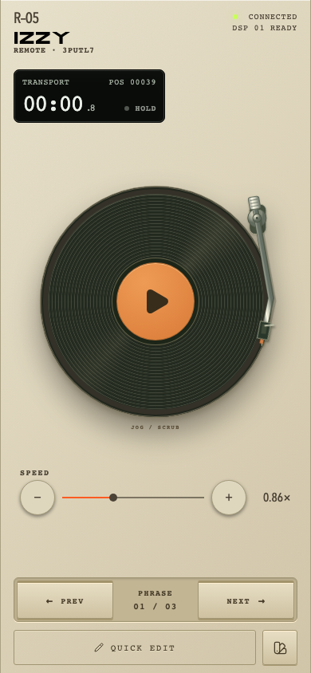
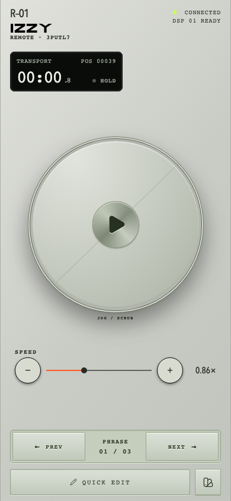
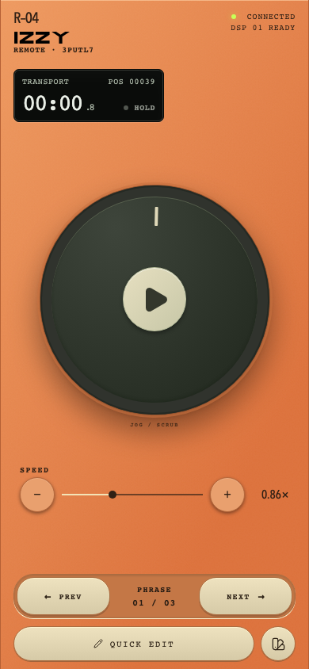
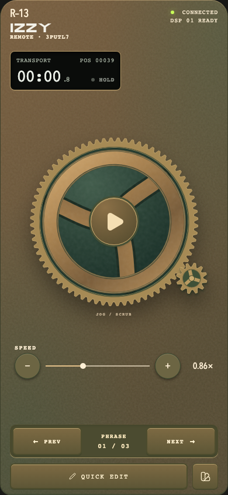
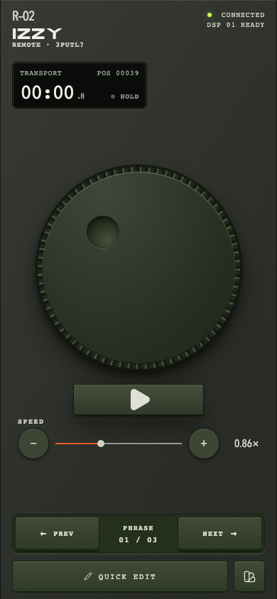
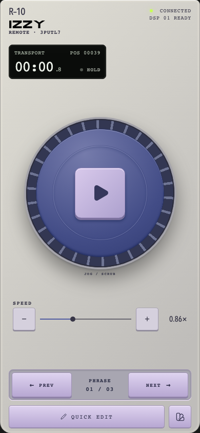
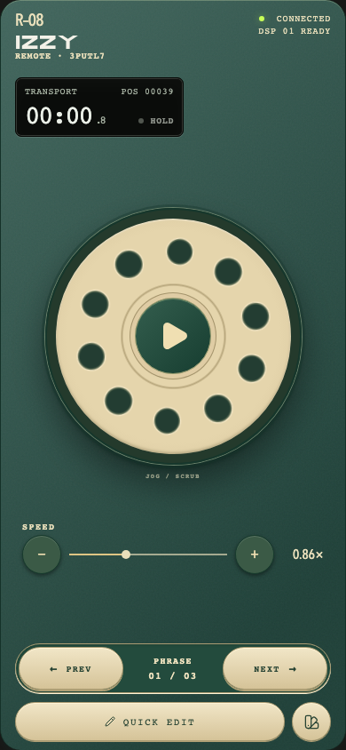
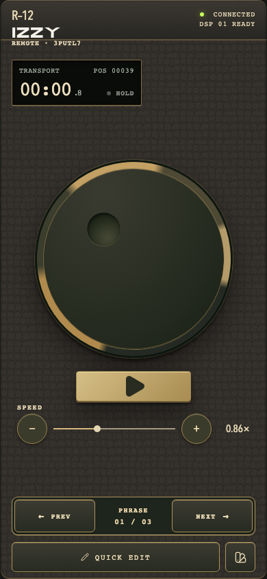
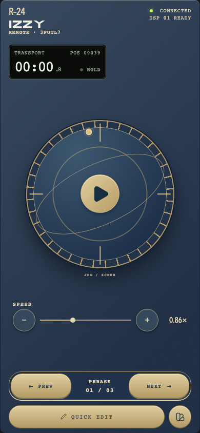

GrooveСтудийные клавиши и гравированная панель Quick Edit.Сравнить с предыдущейПопробовать Groove ↗
Field reelPlay/Pause выгравирован в металлическом центре. Нижняя кнопка убрана.Сравнить с предыдущейПопробовать Field reel ↗
SignalКруглый Play, приборные клавиши в цветах корпуса.Сравнить с предыдущейПопробовать Signal ↗
FoundryМассивные патинированные клавиши. Центральный Play сохранён.Сравнить с предыдущейПопробовать Foundry ↗
ThumbprintУтопленная панель и тёмные клавиши с выраженным краем.Сравнить с предыдущейПопробовать Thumbprint ↗
CartridgeЛитые ABS-клавиши. Предметная деталь консоли — следующий проход.Сравнить с предыдущейПопробовать Cartridge ↗
SwitchboardКлавиши из слоновой кости. Номерная пластина — следующий проход.Сравнить с предыдущейПопробовать Switchboard ↗
CorrespondentЧёрные клавиши в латунной оправе. Деталь камеры — следующий проход.Сравнить с предыдущейПопробовать Correspondent ↗
ObservatoryЛатунные клавиши в синей эмали. Орбитальная геометрия — следующий проход.Сравнить с предыдущейПопробовать Observatory ↗